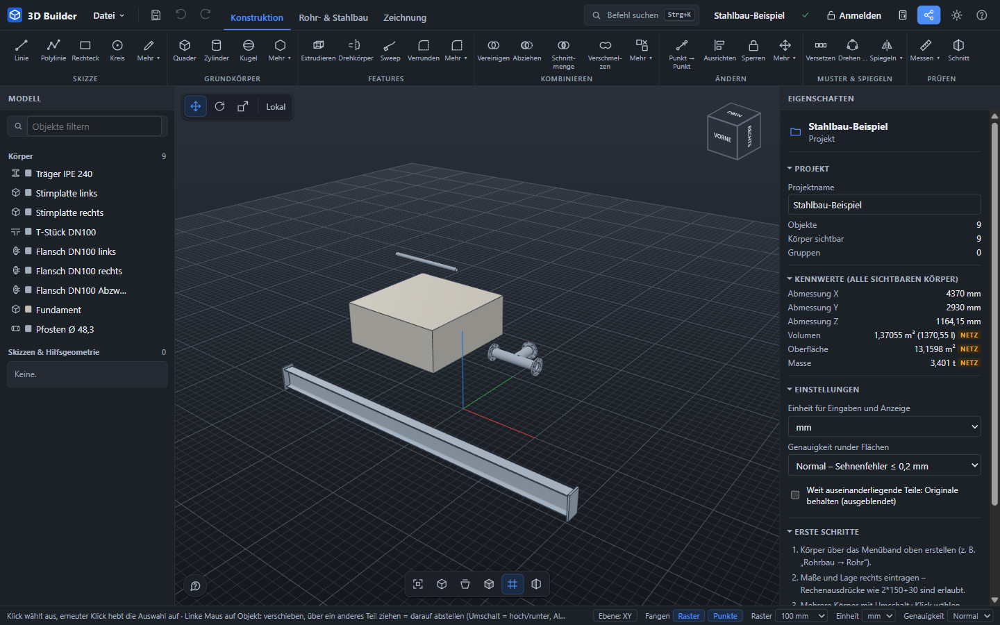

Version 1.2.2 · veröffentlicht am 26. November 2026
3D-Konstruktion für Rohrleitungsbau und Stahlbau
3D Builder ist ein schlankes CAD-Programm für Windows: Rohre, Formstücke und Stahlprofile maßgenau zusammensetzen, Körper verknüpfen und technische Zeichnungen ausgeben. Läuft offline, ohne Konto.
3D Builder für Windows herunterladen
Du möchtest nichts installieren?
Die portable Version läuft ohne Installation, z. B. vom USB-Stick: ZIP entpacken und 3D Builder.exe im Ordner starten.
Projekte und Einstellungen liegen im Ordner 3D-Builder-Daten daneben. Sie aktualisiert sich nicht selbst, meldet aber neue Versionen.
Funktionen
Rohrleitungsbau
Normrohre, Bögen, T-Stücke, Kreuze, Reduzierungen und Flansche – auch als durchgehend hohle Leitung verbunden.
Stahlbau
Profile IPE, HEA, HEB, U, Winkel und Hohlprofile mit exakten Querschnittswerten.
Konstruieren
Skizzen mit Bemaßung, Extrudieren, Drehkörper, Sweep, Vereinigen, Abziehen, Fase und Radius – mit Feature-Verlauf.
Technische Zeichnungen
Ansichten, Bemaßung und Schriftfeld; Ausgabe als PDF, DXF und SVG.
Import & Export
STL, OBJ, GLB/GLTF, SVG und DXF; Projekte als eigene Datei (*.3db.json).
Offline & privat
Kein Konto, kein Tracking. Projekte werden automatisch lokal gesichert.
Versionshinweise
1.2.2 · 26. November 2026
- Portable Version zusätzlich als ZIP mit Programmordner: startet in etwa 1 Sekunde statt über einer Minute.
- Updates werden im Hintergrund heruntergeladen (Fortschritt in der Taskleiste). Danach fragt das Programm, ob es sofort neu starten soll. Sonst wird das Update beim nächsten Schließen installiert.
- Die portable Version meldet neue Versionen und öffnet auf Wunsch die Download-Seite.
- Neu im Datei-Menü der installierten Version: „Zuletzt geöffnet“.
- Projektdateien aus einer neueren Programmversion werden mit einem deutlichen Hinweis geöffnet, damit das Original nicht überschrieben wird.
- Kleinere Download- und Installationsgröße (nur deutsche und englische Sprachdateien).
1.2.1 · 22. November 2026
- Beim Ziehen rastet ein Bauteil mit seiner Mitte an Ecken und Kantenmitten anderer Bauteile ein (Alt = frei ziehen).
- Die Fang-Knöpfe bleiben auch in schmalen Fenstern erreichbar.
1.2.0 · 22. November 2026
- Automatische Updates für die installierte Windows-App.
- Feature-Verlauf: Kombinieren, Rohre verbinden und Verschmelzen behalten die Ausgangsteile; Extrudieren und Drehkörper bleiben mit der Skizze verknüpft.
- Skizzen-Bemaßung mit Status, 3-Punkt-Bogen, Fase/Radius, Aushöhlen.
- Bauteil-Bibliothek, Hilfe-Assistent und Befehlssuche (Strg+K).
Installation
- 3D Builder für Windows herunterladen klicken und die Datei öffnen.
- Zeigt Windows „Der Computer wurde durch Windows geschützt“: Weitere Informationen → Trotzdem ausführen (Hinweis unten).
- Dem Assistenten folgen. 3D Builder erscheint im Startmenü und auf dem Desktop.
Deinstallieren: Einstellungen → Apps → Installierte Apps → 3D Builder. Projekte und Sicherungen bleiben erhalten.
Updates
Die installierte App sucht beim Start nach einer neuen Version, lädt sie im Hintergrund (Fortschritt in der Taskleiste) und fragt dann, ob sie gleich neu starten soll – sonst wird das Update beim nächsten Schließen installiert. Mitten in der Arbeit wird nichts geschlossen; Projekte und Einstellungen bleiben erhalten. Von Hand: Hilfe → Nach Updates suchen (Menüleiste mit Alt).
Portable Version: Sie meldet neue Versionen und öffnet auf Wunsch diese Seite. Neues ZIP entpacken und den Ordner
3D-Builder-Daten aus dem alten Programmordner mitnehmen.
Systemanforderungen
- Windows 10 oder 11, 64-Bit (x64)
- ca. 350 MB freier Speicher
- Grafik mit WebGL 2 (Standard bei aktuellen Grafiktreibern)
- Internet nur für Updates
Dateien und Prüfsummen
3D-Builder-Setup.exe· 109 MB · nicht digital signiertSHA-256 0984f03e344924d6a38318f2de43f60028f6fcae908306627462acc8591c26733D-Builder-Portable.zip· 141 MB · nicht digital signiertSHA-256 6a198014f6653f8bb4ba0ff44e7ecc41d8e59382ca87a24f4713c7a500becf543D-Builder.exe· 99 MB · nicht digital signiertSHA-256 3cc125906588b55535ef0a6a6111c18f3ddd72e69965c0878010c08843f10f0f
Prüfen in PowerShell: Get-FileHash .\3D-Builder-Setup.exe. Alle Werte: SHA256SUMS.txt.
Windows-Sicherheitshinweis
Die Programmdateien sind derzeit nicht digital signiert. Windows SmartScreen zeigt deshalb beim ersten Start „Unbekannter Herausgeber“. Das ist bei unsignierten Programmen üblich, bedeutet aber auch: Windows kann die Herkunft nicht bestätigen. Laden Sie nur von dieser Seite und vergleichen Sie bei Bedarf die Prüfsumme.
Die Rechner und Profilwerte sind Hilfsmittel. Sie ersetzen keine Statik und keine Prüfung durch eine fachkundige Person.